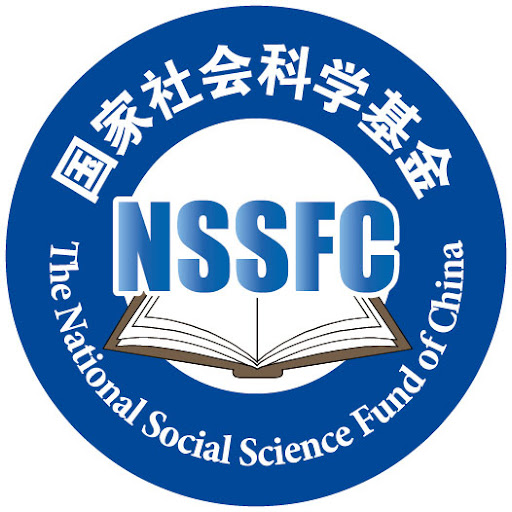

Hongzheng Li (李 洪政)
 |
Contact:
Email: lihongzheng [@] bit[DOT] edu [DOT] cn |
BIO
Dr.Hongzheng Li is currently a tenured associate professor in the School of Foreign Languages(SFL), Beijing Institute of Technology(BIT). He is also a researcher of the Key Laboratory of Language, Cognition and Computation(LCC), Ministry of Industry and Information Technology(MIIT). His research interests focus on Natural Language Processing(NLP) and Large Language Model(LLM), Corpus Linguistics, etc.
He will recruit phD students since September 2026. Excellent students with a solid (Python) programming background and strong interest in NLP and computational linguistics are welcome! He also provides Postdoc positions!
Since 2025.01, tenured associate professor, SFL, BIT
2020.11-2024.12, pre-tenured assistant professor, SFL, BIT
2018.07-2020.10, Postdoc researcher, School of Computer Science, BIT
News
- Attending the 11th Training program for outstanding young and middle-aged scholars organized by the State Language Commission, Ministry of Education(MOE)
- We have one paper accepted by CCL2025!
Education
2014.09-2018.06, PhD of Computational Linguistics, Institute of Chinese Information Processing, Beijing Normal University
2016.08-2017.08, visiting student sponsored by China Scholarship Council(CSC), Department of Computer Science and Operations Research, University of Montreal
2011.09-2014.06, MA of Computational Linguistics, Institute of Chinese Information Processing, Beijing Normal University
Teaching
Graduate Courses
Development and Application of Translation Technology (Every spring semester)
Computer-Assisted Translation (Every fall semester)
Education Technology for Modern Languages (2021 Fall, 2022 Fall, 2023 Fall)
Python Programming for Language Processing (Every fall semester since 2023)
Language and Big Data Technology (2022 Fall)
Undergraduate Courses
Dissertation Writing(Every spring semester since 2021)
Introduction to Computational Linguistics(Every spring semester since 2024)
Linguistic Data Science(Every spring semester since 2025)
Research Interests
Natural Language Processing, Large Language Model(LLM)
Machine Translation
Corpus Linguistics
Research Projects
- 
National Social Science Fund of China(NSSFC)(2024.10-2027.12) Research on the security and governance of text data in LLM from the perspective of national security

National Natural Science Foundation of China(NSFC)(2020.01-2022.12) Research on the language resources construction and technology of Low-resource languages Machine Translation
University-Industry Collaborative Education Program, Ministry of Education(MOE)(2021.08-2023.08)
Decision and Consulting Program, Ministry of Industry and Information Technology(MIIT)(2021.05-2021.10)
China Postdoctoral Science Foundation(2018.11-2020.11)
Selected Publications
2025
李琦, 纪悦, 李洪政*. 大语言模型可以分析花园幽径句吗？—基于跨语言数据集的实证研究. Proceedings of China National Conference of Computational Linguistics (CCL2025).
李洪政, 王若锦, 冯冲, 刘芳. 语言模型辅助的英语科技论文摘要语步结构语料库构建研究. 外语学刊.
2024
李洪政, 王若锦, 冯冲, 刘芳. 英语科技论文摘要语步结构语料库构建研究. Proceedings of China National Conference of Computational Linguistics (CCL2024).
Hongzheng Li, et al. RAAMove: A Corpus for Analyzing Moves in Research Article Abstracts. Proceedings of the 2024 Joint International Conference on Computational Linguistics, Language Resources and Evaluation (LREC-COLING 2024).
2023
Hongzheng Li, Ruojin Wang, Can Shi. “Oh My God! Buy it!” Analysis on the Characteristics of Anchor's speech in Live Broadcast E-commerce and Purchase Intention: A Linguistics Perspective. Sage Open.(SSCI)
J. Lin, Hongzheng Li, et al. Move Structure Recognition in Scientific Papers with Saliency Attribution. Proceedings of 17th China Conference on Knowledge Graph and Semantic Computing (CCKS 2023).(Best Award of Resource Paper!)
2022
Hongzheng Li, Ruojin Wang. Book Review: the Routledge Handbook of Translation and Ethics. Language Resources and Evaluation.(SCI, DOI:https://doi.org/10.1007/s10579-022-09626-z)
2021
Hongzheng Li, Chong Feng, Heyan Huang. 稀缺资源语言神经网络机器翻译研究综述(A Survey on Low-resource Neural Machine Translation). 自动化学报.(CCF-A Journal)
2020
J.Sha, L. Zhou, C. Feng, Hongzheng Li, et al. 面向司法领域的高质量开源藏汉平行语料库构建(A High-quality Open Source Tibetan-Chinese Parallel Corpus Construction of Judicial Domain). 19th Chinese National Conference on Computational Linguistics(CCL2020).(Best Paper Award!)
Hongzheng Li, J. Sha, C. Shi. Revisiting Back-Translation for Low-Resource Machine Translation Between Chinese and Vietnamese. IEEE ACCESS.
J.R. Zhang, Hongzheng Li, S.M. Shi, et al. Dynamic Attention Aggregation with BERT for Neural Machine Translation. Proceedings of International Joint Conference on Neural Networks (IJCNN2020).(CCF-C Conference)
2019
Y.Zhang, C.Feng, Hongzheng Li. Quality Estimation with Transformer and RNN Architectures. Proceedings of China Conference of Machine Translation(CCMT2019).
2018
Y. Qiu, Hongzheng Li, S. Li, et al. Revisiting Correlations between Intrinsic and Extrinsic Evaluations of Word Embeddings, Proceedings of China National Conference of Computational Linguistics (CCL2018).(Best Paper Award!)
2017
李洪政,晋耀红.汉语介词短语自动识别研究综述.中文信息学报.
李洪政,赵凯,胡韧奋等. 面向专利领域的汉英机器翻译融合系统.情报工程.
H.Z. Li, P. Langlais, Y. Jin.Translating Implicit Discourse Connectives Based on Cross-lingual Annotation and Alignment. Proceedings of Workshop on Discourse Machine Translation of EMNLP.
2016
H.Z. Li, Y. Jin. Classifying Commas for Patent Machine Translation. Proceedings of China Workshop on Machine Translation(CWMT).
2015
李洪政,朱筠,晋耀红.汉英专利机器翻译中动-介兼类词自动识别.计算机工程与应用.
Academic Service
Executive director of the Reading Grading Committee, Society on Modernization of Chinese Language
Member of Youth Working Committee, Chinese Information Processing Society of China(CIPS)
Executive member of Natural Language Processing Technical Committee, China Computer Federation(CCF)
Conference Reviewer
EMNLP2021,CCL2021,NLPCC2021,NLPCC2022